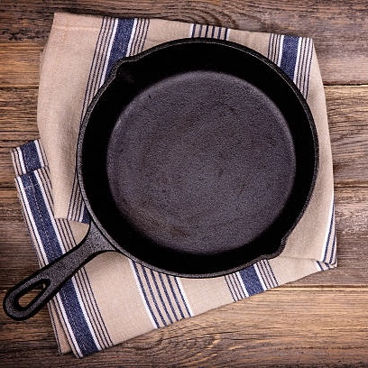
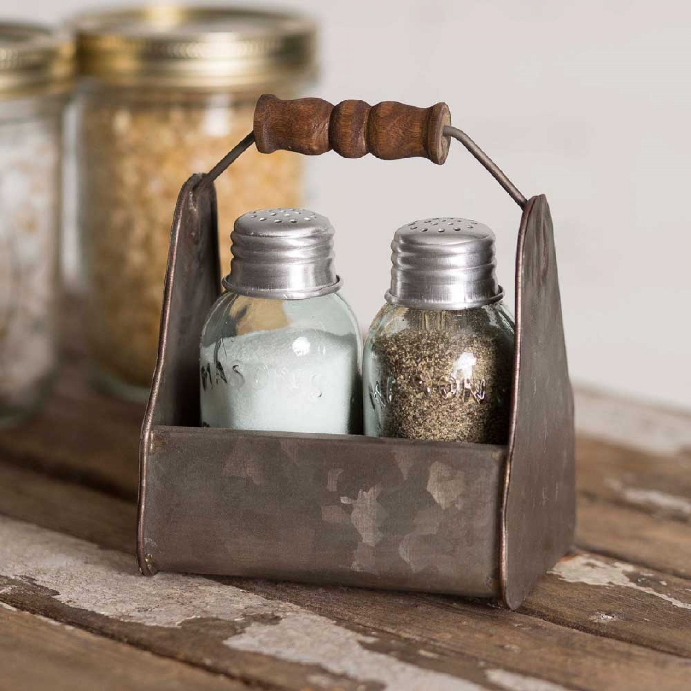
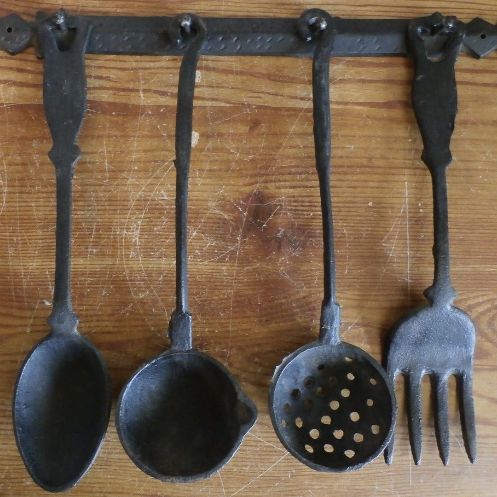
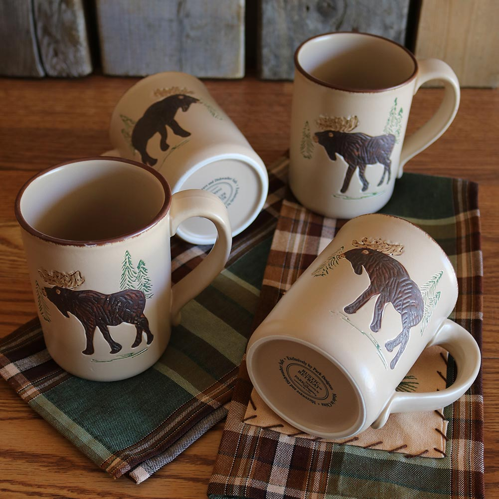
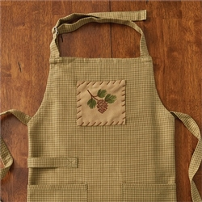
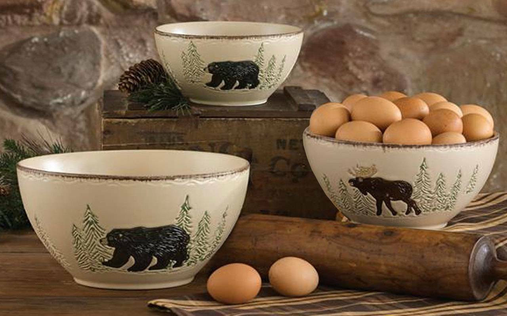

Christie and Chris's Cooking Cabin
Products
Check out our most popular products
Here is what our customers love!



- Rustic Iron Skillet
- 6 Inch.........$11.99
- 8 Inch.........$13.99
- 10 Inch.......$15.99
- Salt and Pepper Shakers
- Small............$8.99
- Large..........$11.99
- Metal Cooking Utensils
- Set of 4......$16.99
- Set of 8......$29.99



- Ceramic Moose Mugs
- Set of 2.......$8.99
- Set of 4......$15.99
- Set of 6......$23.99
- Handmade Plaid Apron
- Cream........$17.99
- Green.........$17.99
- Beige.........$17.99
All of our aprons are made from sustainably sourced cotton.
Check out how we are making a global impact with our product here!
- Big Bear Bowls
- Set of 2......$10.99
- Set of 4......$20.99
- Set of 6......$29.99
Here is a downloadable PDF file of our product selection for your convenience!
If you have any questions or concerns, feel free to contact us through Email!